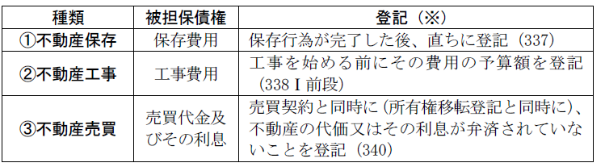
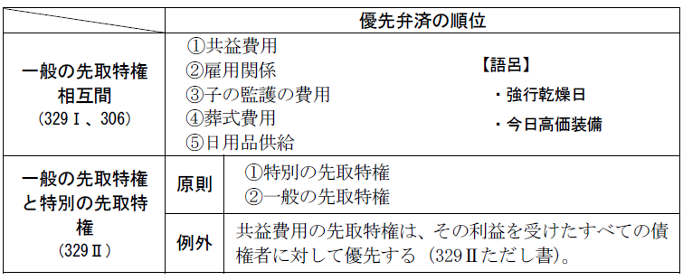
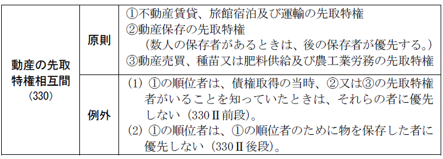
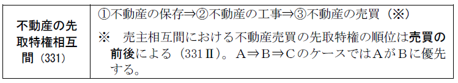
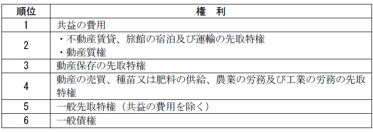
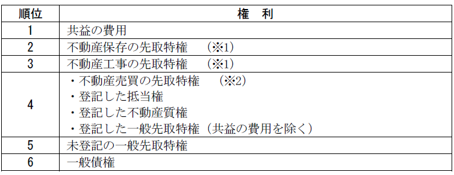

第３編 担保物権
第５章 先取特権
第１節 意義
：法律の定める一定の債権を有する者が、債務者の財産について、他の債権者に先立って自己の債権の弁済を受けることができる法定担保物権
先取特権は、①当事者の意思の推測、②公平の見地、③社会政策的配慮などから、法が債権者平等の原則の例外として、特殊の債権を特に保護しようとするものである。
法定担保物権であり、当事者の契約で発生させることはできない。
付従性・随伴性・不可分性（305条、296条）・物上代位性（304条。ただし、一般の先取特権を除く）を有する。
第２節 種類
先取特権には、一般の先取特権（306条以下）、動産の先取特権（311条以下）、不動産の先取特権（325条以下）がある。
1. 意義
：債務者の一般財産の上に成立する先取特権
一般の先取特権は、債務者の総財産を目的とし、しかも不動産について登記がなくても一般債権者に対抗できるので（336条）、その効力はきわめて強く、一般債権者を害するおそれが大きい。このため、一般の先取特権によって担保される債権を、その性質が特に保護されるべきもので、債権額の比較的小さいものに限定した。
一般先取特権は、まず不動産以外の財産から弁済を受け、不足があれば不動産から弁済を受ける（335条1項）。
[t1.1]2. 種類（306条）
共益の費用（１号）、雇用関係（２号）、子の監護の費用（３号）、葬式の費用（４号）、日用品供給費（５号）
(1) 共益費用（307条）
各債権者の共同の利益のためにされた債務者の財産の保存、清算又は配当に関する費用
ｅｘ．債務者の財産を競売した場合の競売手続の費用
(2) 雇用関係（308条）
給料その他債務者と使用人との間の雇用関係に基づいて生じた債権
雇用主に比べて弱い立場である労働者を保護する趣旨である。
通常の給料だけでなく、パートや日雇い、退職金や賞与でも成立する。
(3) 子の監護の費用（308条の２）
子の監護の費用の先取特権は、次の①から④の義務に係る確定期限の定めのある定期金債権の各期における定期金のうち子の監護に要する費用として相当な額（子の監護に要する標準的な費用その他の事情を勘案して当該定期金により扶養を受けるべき子の数に応じて法務省令で定めるところにより算定した額）について存在する。
①752条の規定による夫婦間の協力及び扶助の義務
②760条の規定による婚姻から生ずる費用の分担の義務
③766条及び766条の3（これらの規定を749条、771条及び788条において準用する場合を含む。）の規定による子の監護に関する義務
④877条から第880条までの規定による扶養の義務
養育費債権は重要な権利であるため、子の監護の費用に一般先取特権が成立することとして、債権者である子の父又は母は、債務名義がなくても、民事執行（担保権実行等）の申立てをすることができ、かつ、他の一般債権者に優先して弁済を受けられるようにしたものである。
(4) 葬式の費用（309条）
葬儀屋の債権が被担保債権となる。
ｅｘ．債務者のためになされた葬式の費用
(5) 日用品供給費（310条）
日用品の供給の先取特権は、債務者又はその扶養すべき同居の親族及びその家事使用人の生活に必要な最後の６か月間の飲食料品、燃料及び電気の供給について存在する（310条）。
ｅｘ．電気代（電力会社が債権者となる）
債務者とその家族の生活の維持のための規定であるため、債務者は自然人に限られ、法人は含まない（最判昭46.10.21）。
1. 意義
：債務者の特定の動産の上に成立する先取特権
動産の先取特権により担保される債権は８種類のみ限定列挙されている（311条）。いずれも目的動産と特別の関係にあり、その動産から優先弁済を受けさせるべき特別の理由があるからである。
2. 種類（311条）
不動産の賃貸借（１号）、旅館の宿泊（２号）、旅客又は荷物の運輸（３号）、動産の保存（４号）、動産の売買（５号）、種苗又は肥料の供給（６号）、農業の労務（７号）、工業の労務（８号）
(1) 不動産の賃貸借（312条）
不動産の賃貸借から生ずる債権を担保するため、賃借人が賃借物に持ち込んだ動産（テレビなど）の上に成立する（312条、313条）。
ｅｘ．賃貸人が賃借人に有する賃料債権、損害賠償請求権
賃借権の譲渡又は転貸の場合には、賃貸人の先取特権は、譲受人又は転借人の動産及び譲渡人又は転貸人が受けるべき金銭に及ぶ（314条）。
賃貸人は、622条の２第１項に規定する敷金を受け取っている場合には、その敷金で弁済を受けない債権の部分（敷金でまかなえない分）についてのみ先取特権を有する（316条）。
(2) 動産の保存（320条）
動産の保存の先取特権は、動産の保存のために要した費用又は動産に関する権利の保存、承認若しくは実行のために要した費用に関し、その動産について存在する（320条）。
ｅｘ．動産の修理費用
債務者の財産の価値を保存した債権者を優先させる趣旨である。
(3) 動産の売買（321条）
動産の売買の先取特権は、動産の売主が買主に対して有する動産の売買代金債権及びその利息債権に関し、その動産について存在する（321条）。
1. 意義
：債務者の特定の不動産の上に成立する先取特権
2. 種類（325条）

※ これらより後に登記しても先取特権の効力を保存できない
第３節 効力
先取特権は、目的物の占有を要しない非占有担保物権である点で抵当権と類似しているから、先取特権の効力については抵当権の規定（目的物の範囲・370条、被担保債権の範囲・375条、代価弁済・378条、抵当権消滅請求・379条等）が準用される（341条）。
その他、以下のような効力が問題となる。
優先弁済的効力はあるが、留置的効力はない。
1. 動産上の先取特権
先取特権の目的物が動産の場合、公示を伴わないため、先取特権の成立を知らずに動産を譲り受けた第三者を保護する必要がある。そこで、動産取引の安全を図るべく、第三取得者が引渡しを受けた後は先取特権の効力が及ばないとする（333条、追及効の否定）。
(1) 動産の先取特権であると一般の先取特権であるとを問わない。
(2) 「第三取得者」
「第三取得者」とは、目的動産の譲受人のことである。
(a) 含まれる者
集合動産譲渡担保の譲渡担保権者（最判昭62.11.10）
(b) 含まれない者
賃借人、質権者
(3) ｢引き渡し｣
Ｑ 「引き渡し」には、占有改定も含むか。
→ 含む（大判大６.７.26、最判昭62.11.10・通説）。
（理由）
① 本条の趣旨は先取特権の追及効を制限して動産取引の安全を図るものであるから、第三取得者の事情を中心に考えるべきである。
② 動産譲渡の対抗要件としての引渡しには占有改定も含むことが一般に認められている。
③ 債務者が現に占有する動産への先取特権者の信頼の保護としては、先取特権の即時取得の規定（319条、192条）により図ることができる。
2. 不動産上の先取特権
一般の先取特権が不動産に及ぶ場合にも、不動産の先取特権の場合にも、第三取得者との優劣は登記の先後により決まる。
物上代位が認められるが、一般の先取特権には認められない。なぜなら、一般の先取特権は、債務者の総財産を目的とする（306条）ものだからである。
1. 先取特権相互間
(1) 一般の先取特権相互間、一般の先取特権と特別の先取特権間

(2) 動産の先取特権相互間（330条）

(3) 不動産の先取特権相互間（331条）

(4) 同一順位者相互間
各先取特権者は、その債権額の割合に応じて弁済を受ける（332条）。
2. 全体の優先弁済の順序
(1) 動産

(2) 不動産

※1 2・3は登記があれば抵当権に優先する（登記がなければ効力を保存できない）。
※2 4の中では登記したものから優先する。
(3) 抵当権との関係
(a) 一般の先取特権と抵当権が競合する場合（336条）
抵当権が未登記であれば一般の先取特権は未登記でも抵当権に優先するが、抵当権に登記がある場合は一般の先取特権が未登記であれば抵当権が優先し、両者に登記があればその先後で優劣が定まる。
(b) 不動産の先取特権と抵当権が競合する場合（339条）
不動産保存の先取特権（337条）と不動産工事の先取特権（338条）は、登記されていれば、抵当権に優先する。
第４節 消滅
物権及び担保物権に共通の消滅原因により消滅する。
動産上の先取特権は目的物が第三者に譲渡された場合にも消滅する（333条）。
代価弁済・抵当権消滅請求の規定も準用される（341条、378条以下）。